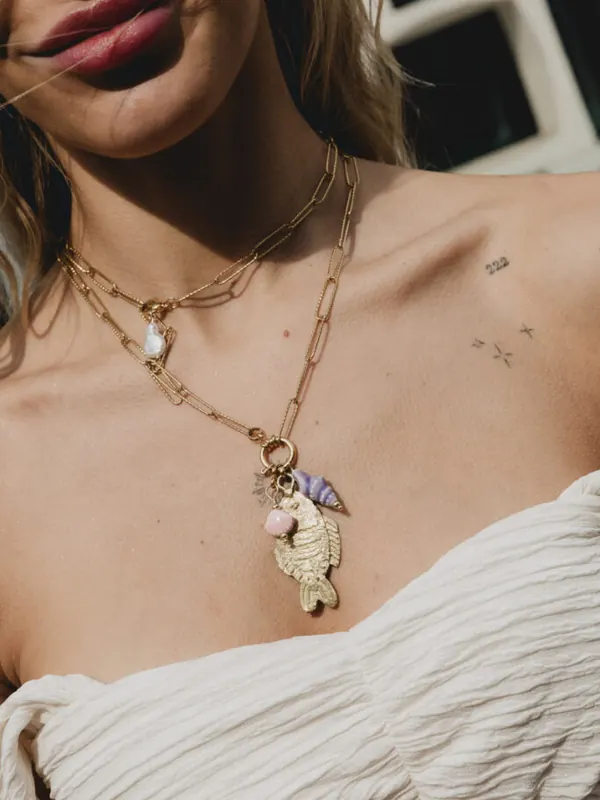
Naszyjnik Karpik
naszyjniki krótkie
270,00 zł
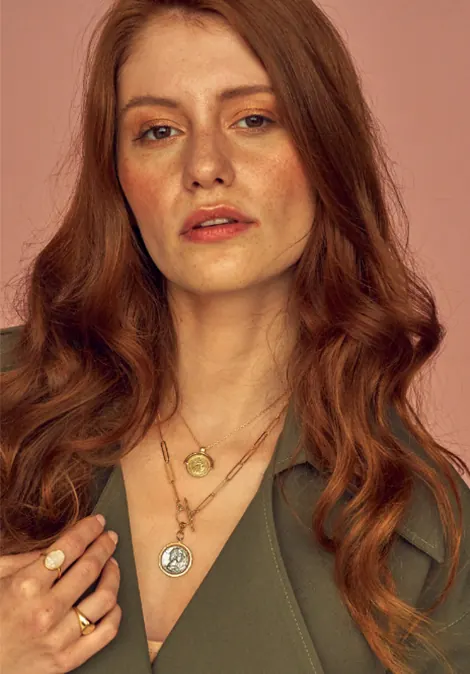
Naszyjniki, bransoletki, pierścionki i kolczyki z kamieni szlachetnych i półszlachetnych. Każdą sztukę robimy ręcznie w pracowni przy Bukowskiej.
Zobacz nowościKrótkie serie, często w jednym egzemplarzu. Kiedy się skończą, kolejnych takich samych może już nie być.

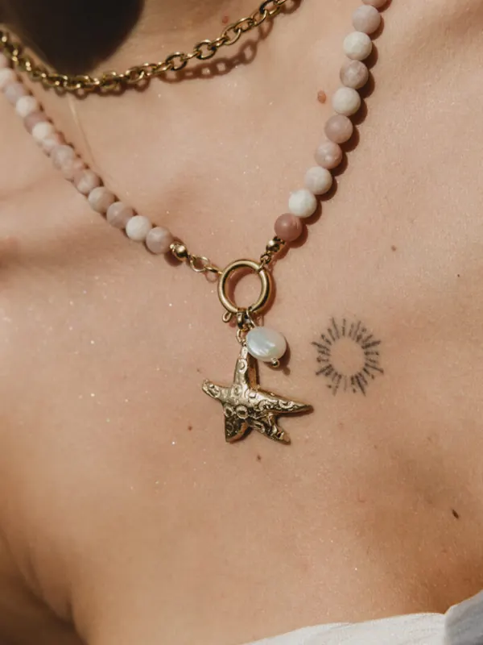
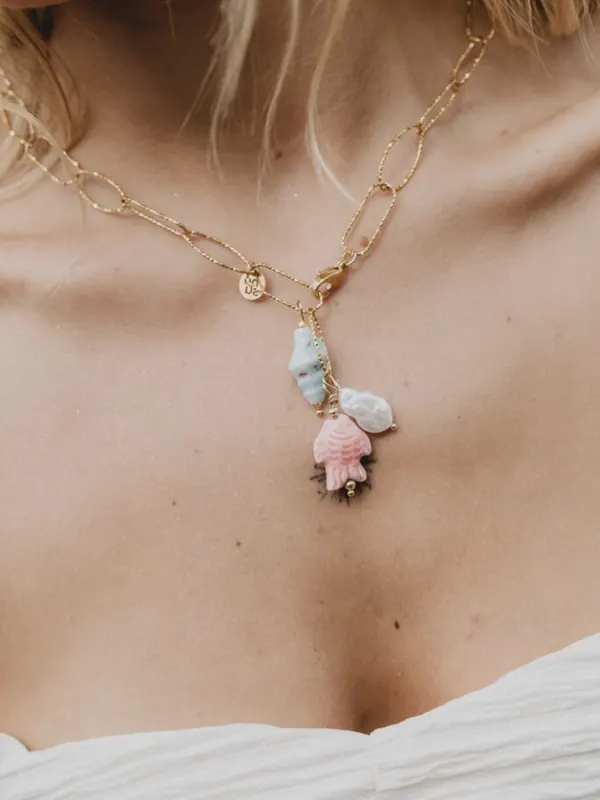
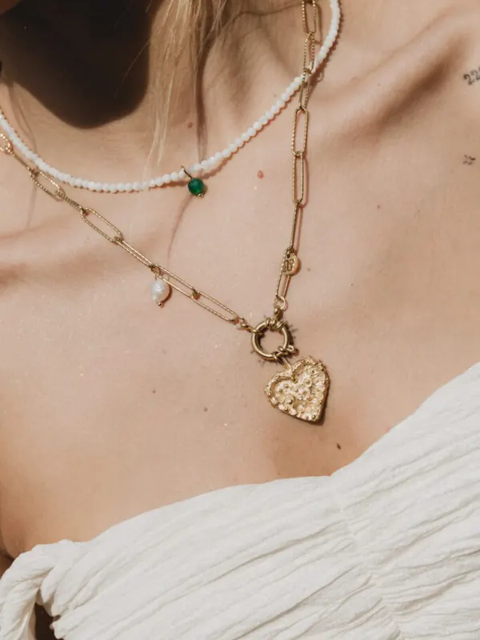
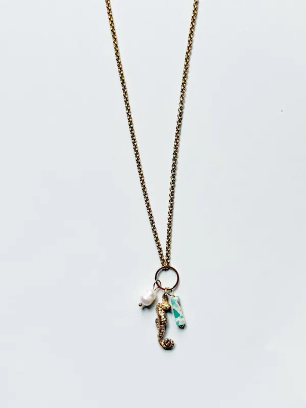
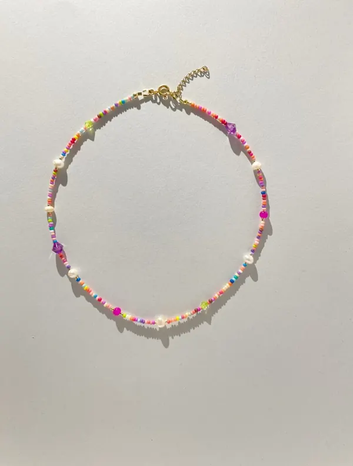
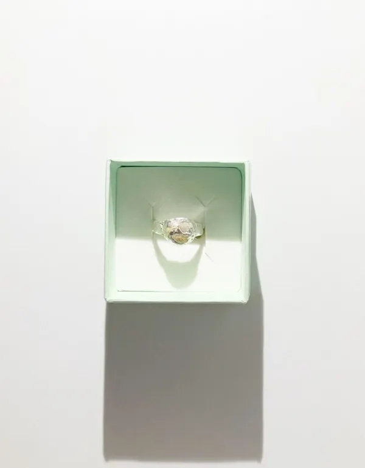
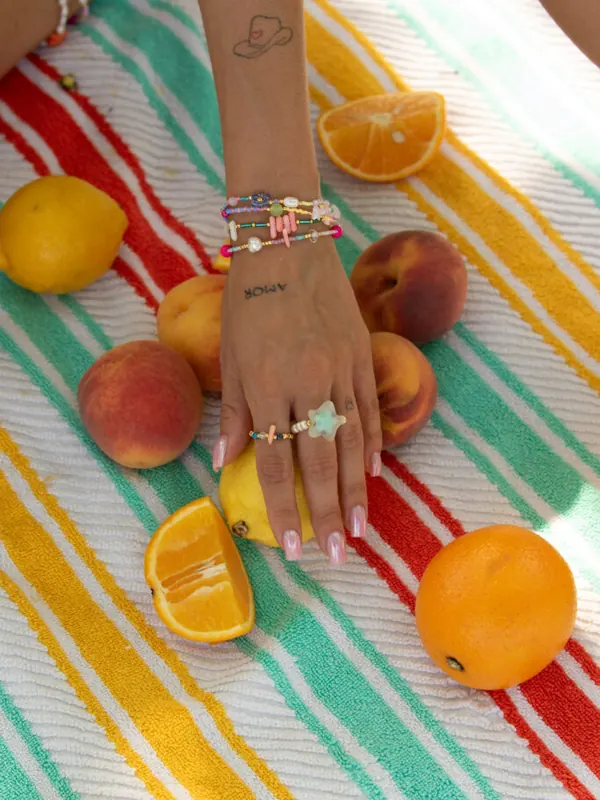
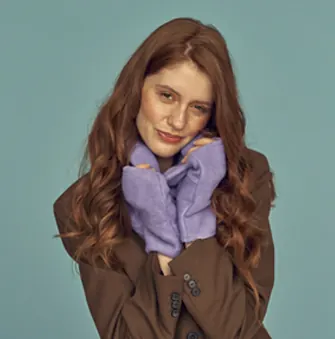
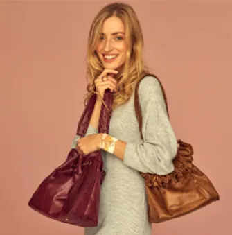
Mam na imię Asia i projektowanie zaczynam od pytań: co dodać do torebki, żeby była wygodniejsza? Czy biżuteria ma tylko zdobić? Odpowiadam nowym krojem, ukrytą kieszonką, zaskakującym zapięciem i kamieniami, które wybieram po jednym.
„Bo z sobą najlepiej Ci do twarzy.”Asia, założycielka i projektantka NOSU
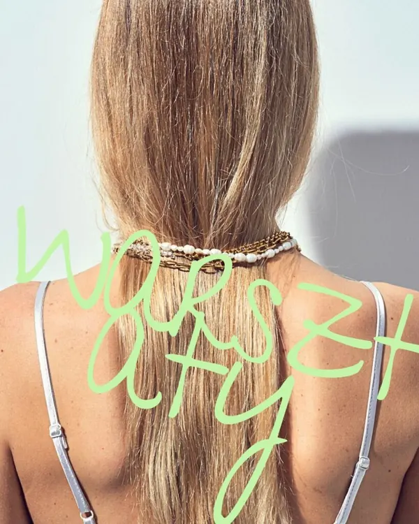
Zrób własną biżuterię pod okiem projektantki. Bilet kupuje się w sklepie tak jak produkt, więc łatwo go też podarować.
Gdy nie wiesz, co wybrać. Obdarowana osoba sama znajdzie coś dla siebie w sklepie albo na warsztatach.
Wybierz kartęChcesz zmienić coś w gotowym wzorze albo masz własny pomysł? Napisz, zaprojektujemy go razem.
Napisz do nasJesteś w okolicy? Wpadnij na kawę na Bukowską 31/7 i zobacz biżuterię na żywo.
Jak dojechaćUżywamy plików cookies niezbędnych do działania sklepu. Za Twoją zgodą także analitycznych (Google Analytics 4), żeby ulepszać sklep.